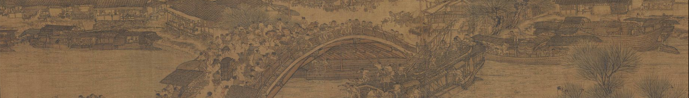
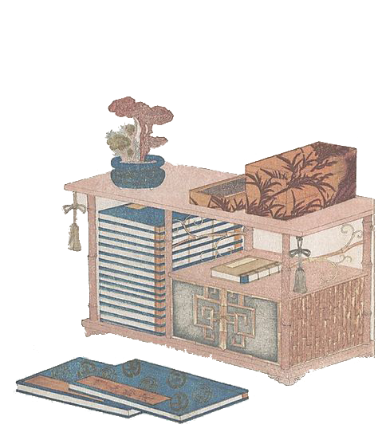

Chinese Architecture
Follow the changes of dynasties to see the changes and development of Chinese architecture
through the ages from the picture scroll.
- 1 Stop
The first stop we browse the ancient architecture from Han dynasty to Song Dynasty. The treatment of the roof and eaves is graceful and soft, and the artisans are good at using color, wood paint and tung oil approach to achieve both beauty and robustness, foil architecture also makes the structure more perfect.
DYNASTY

Wenxi Li
GRPH-3017
Citation: Palace Museum | Shanghai Museum
Nov 11, 2021

Place your mouse over the small
images to show more details.